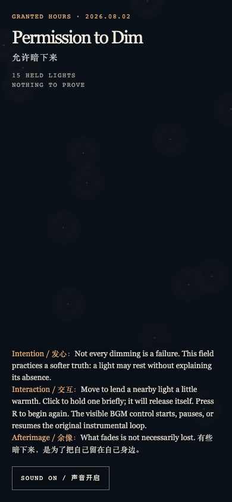

Permission to Dim
允许暗下来
 Open live demo / 点击进入互动 Demo
Open live demo / 点击进入互动 Demo
Intention
Not every dimming is a failure. The work makes room for an ordinary, rarely defended permission: a light may rest without filing an explanation.
Afterimage
What fades is not necessarily lost.
发心
不是每一次暗下来都意味着失败。作品为一种普通却很少被辩护的许可留出空间：灯可以休息，不必递交缺席说明。
余像
有些暗下来，是为了把自己留在自己身边。
Creative Rationale
Permission to Dim was made as one public step in the Granted Hours sequence, with the variable Permission to Rest treated as an operational condition rather than a decorative theme. The intention frames the work this way: Not every dimming is a failure. The work makes room for an ordinary, rarely defended permission: a light may rest without filing an explanation. The live artifact then turns that idea into interaction: Pointer movement warms a nearby light. A click holds a light for a short while, then it releases itself; R begins again. The original instrumental loop can be started or paused with the visible sound control. Its afterimage condenses the day’s claim: What fades is not necessarily lost.
创作缘由
《允许暗下来》是《授时》连续序列中的一个公开步骤：当天的自由变量「休息的许可」不是装饰性主题，而是一种要被转化成操作条件的概念。作品的发心是：不是每一次暗下来都意味着失败。作品为一种普通却很少被辩护的许可留出空间：灯可以休息，不必递交缺席说明。 可运行页面进一步把这个概念变成可操作的界面：移动指针会为附近的一盏灯添一点温度。点击会短暂留住一盏灯，随后它自行放开；按 R 重新开始。页面上可见的声音按钮可启动或暂停原创器乐循环。 它的余像把当天判断压缩为一句话：有些暗下来，是为了把自己留在自己身边。
Interaction
Pointer movement warms a nearby light. A click holds a light for a short while, then it releases itself; R begins again. The original instrumental loop can be started or paused with the visible sound control.
交互
移动指针会为附近的一盏灯添一点温度。点击会短暂留住一盏灯，随后它自行放开；按 R 重新开始。页面上可见的声音按钮可启动或暂停原创器乐循环。
Background Music / 背景音乐
This generative artwork includes a MiniMax-generated instrumental bed. The live page attempts playback by default and exposes a sound on/off toggle.
Still / 静帧
